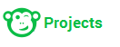

Table of Contents
Note
The following image contains links to more information.

Note
The following image contains links to more information.
Note
The following image contains links to more information.
Note
The following image contains links to more information.
Documentation
Videos
Build Projects
Project Teams
Project Documents
Data Models
UI Composer
Prototypes
User Research Studies
Print Version
What's New
View PDF version
This is a beta release of Build.